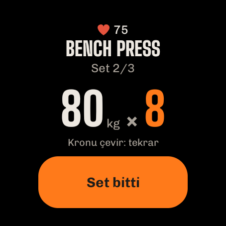
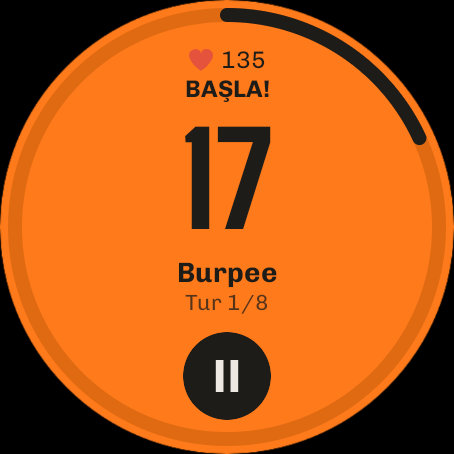

Kılavuz
ImberGym'in tüm özellikleri adım adım. PREMIUM işaretli özellikler ImberGym Premium'a dahildir; geri kalan her şey ücretsizdir.
01İlk adımlar
ImberGym'i ilk açtığında birkaç soru her şeyi hazırlar. Hepsini daha sonra profilinden değiştirebilirsin.
- Dil: Türkçe, Almanca, İngilizce, İspanyolca, Fransızca, İtalyanca veya Portekizce (telefonuna göre önceden seçili).
- Birimler: metrik (kg, km) veya imparatorluk (lb, mi). Uygulama her zaman kesin değerleri saklar; birim yalnızca gösterimi değiştirir.
- Seni tanıyalım: ad, cinsiyet (“belirtmek istemiyorum” dahil), yaş ve isteğe bağlı kilo ve boy. Kilo ve boy, vücut ağırlığı egzersizleri ve kalori hedefin için kullanılır.
- Hedef ve antrenman: hedef (ör. kas kazanmak, yağ yakmak), aktivite düzeyi, nerede çalıştığın (salon, evde dambılla, ekipmansız) ve isteğe bağlı antrenman günleri. Antrenman günleri sadece planlamadır: hiçbir şey “kaçırıldı” diye işaretlenmez.
- Dinlenme sayacı: her setten sonra geri sayım çalışsın mı.
- Kalori sayılsın mı? Beslenme olmadan “Beslenme” sekmesi kaybolur ve ImberGym saf bir antrenman günlüğü olur.
- Başlangıç programı ve takvim: uygulama uygun bir başlangıç programı oluşturabilir ve antrenmanları takvimine kaydedebilir (bkz. Takvim).
Yeni telefon mu? İlk sayfada “Yedeği geri yükle”ye dokun ve yedeğinin ZIP dosyasını seç (bkz. Yedekleme).
02Uygulamanın yapısı
- Ana sayfa: günlük kullanım: hafta, öneri, programlar, antrenman başlatma.
- Programlar: programların, şablonlar ve egzersiz kütüphanesi.
- Geçmiş: istatistikler, tüm antrenmanlar ve rekorlar.
- Beslenme: kalori, makrolar, yiyecekler ve tarifler (kapatılabilir).
- Profil: ayarlar, vücut ölçüleri, takviyeler, salonlar, yedekleme ve daha fazlası.
Alttaki mesajlar birkaç saniye sonra veya dokununca kaybolur, “Geri al” olanlar da.
03Ana sayfa

Hafta
Pazartesiden pazara çubuk, yapılan antrenmanları onay işaretiyle turuncu, planlanan gelecek günleri kesik çizgili ve bugünü çerçeveli gösterir.
Bugün önerilen
En son kullandığın programın birden fazla günü varsa kart, programın sırasına ve kaslarının ne kadar toparlandığına göre uygun olanı önerir (bkz. Öneri). “Antrenmanı başlat” seni hemen başlatır.
Programların
- Tüm programlar kapalı görünür, en son çalışılan en üstte. Her günü son yapılışıyla (süre, set, hacim veya mesafe) görmek için dokunarak aç.
- ▶ sıradaki günü başlatır. Bir programın birden fazla günü varsa uygulama hangisi olduğunu sorar: sıradaki en üsttedir.
- Bir karta dokunmak, o günün son antrenmanını tüm setleriyle açar.
- ⋮ menüsüyle “Ana sayfadan kaldır” (geri alınabilir). Program “Programlar” sekmesinde kalır ve onunla tekrar çalışınca geri gelir.
- Son dört haftanın serbest antrenmanları da burada görünür (egzersizlerinin adıyla, ör. “Doğa yürüyüşü”) ve ▶ ile tekrarlanabilir.
Hızlı başlangıç
- Başka gün: herhangi bir programın herhangi bir gününü başlat.
- Serbest antrenman: programsız, egzersizleri yolda ekle.
- İnterval: Tabata ve dahası. PREMIUM
- Meydan okuma: kaç tekrar yapabilirsin? Kamera sayar.
- GPS ile açık hava: koşu, bisiklet ve yürüyüş kaydet. PREMIUM
Ayarlarına göre ana sayfa ayrıca “Bugünkü beslenme”, “Bugünkü takviyeler”, açık bir GPS kaydı (“devam et”) ve sağ üstte üyelik kartların için bir kart simgesi gösterir.
04Programlar ve şablonlar
Şablonlar
“Programlar” sekmesinde hazır programlar var: başlangıç (salon, evde dambıllı ve dambılsız), tüm vücut A/B, üst/alt vücut, push/pull/bacak, kas gruplarına göre split'ler, karın-bacak-kalça, kalistenik, kettlebell, bantlar, yoga ve daha fazlası. Bir şablonu doğrudan başlat veya kendi programın olarak kopyala. Kopyalarken uygulama dinlenme sayacının kullanılıp kullanılmayacağını sorar.
Program oluşturma ve düzenleme
- “Programlar” sekmesi → “Yeni program”, bir ad ver.
- Günler ekle (ör. Push, Pull, Bacak). Günler bir sıralamadır, sabit hafta günleri değil.
- Her güne egzersizler ekle ve setleri, tekrarları (8–12 gibi bir aralık da), setler arası dinlenmeyi ve sonraki egzersizden önceki dinlenmeyi ayarla. “Her taraf” tek taraflı egzersizleri işaretler.
- Süperset: art arda iki egzersizi bağla: antrenmanda sırayla yapılır ve dinlenme turdan sonra gelir.
- Listenin altına bir interval bloğu (Tabata vb.) ekle: bkz. İnterval antrenman.
Her değişiklik hemen kaydedilir. Üstteki süre tahmini günün yaklaşık ne kadar süreceğini gösterir. Düzenleyicide bu programın dinlenme sayacını açıp kapatır ve ana sayfada gösterilip gösterilmeyeceğini seçersin.
Programı QR kodla paylaşma
Program düzenleyicide QR simgesine dokun: tüm program koddadır, sunucu yok. “Görsel olarak paylaş” onu ör. mesajla gönderir. Paylaşmak ücretsizdir.
Program tara PREMIUM: “Programlar” sekmesi → “Program tara”, kodu kamerayla yakala veya bir görselden yükle, önizlemeyi kontrol et ve içe aktar.
Ücretsiz: en fazla 5 kendi program (kopyalanan şablonlar sayılır); Premium ile sınırsız.
05Egzersizler

Egzersiz kütüphanesi
Makinelerden yogaya 250'den fazla egzersiz. Ada veya kasa göre ara, kas ve ekipmana göre filtrele.
Egzersiz ayrıntısı
- Çalışan kaslar turuncu (ana kaslar dolu, yardımcılar açık) hareketin animasyonu, faz (“İt”, “Yavaşça indir”) ve tekrar sayacı.
- Kaslar ve ekipman, tempo ve teknik ipuçlarıyla “Uygulama”.
- Gelişimin: antrenmanlar boyunca değerlerinin grafiği.
- Kalisteniklerde ilerleme seviyeleri (daha kolay/daha zor).
Figür erkek ve kadın olarak mevcuttur: profilinde “Figür” altından seç.
Kendi egzersizini oluşturma
- Kütüphane → kendi egzersizini oluştur.
- Ad, ekipman ve kayıt türü seç: ağırlık × tekrar, vücut ağırlığı × tekrar, bant direnciyle tekrar, süre, kardiyo veya GPS kaydı (kendi açık hava sporların için; ayrıca “Tempoyu göster” ve “Otomatik duraklatma”).
- Vücut haritasında kaslara dokun: 1× = ana, 2× = yardımcı, 3× = kaldır.
Geçmişi olan kendi egzersizlerin silindiğinde arşivlenir: geçmişin korunur. Ücretsiz 5 kendi egzersiz, Premium ile sınırsız.
06Antrenman

Başlatma
Ana sayfadan (▶, “Bugün önerilen”, “Başka gün”, “Serbest antrenman”) veya “Programlar” sekmesinden. Devam eden bir antrenman telefon yeniden başlasa bile korunur: uygulamayı açınca doğrudan ona dönersin.
Antrenman ekranı
- Sayfa başına bir egzersiz: egzersiz değiştirmek için kaydır; son sayfa özettir. Üstte: egzersiz x/y, antrenman süresi ve (göğüs bandıyla) nabzın.
- Set listesi: yapılanlar, “şimdi” (turuncu) ve bekleyenler. Seçmek için bir sete dokun.
- Değerler: ağırlık ve tekrarı −/+ ile değiştir veya yazmak için büyük sayıya dokun (virgül ve nokta geçerli). Geçen seferin değerleri hazırdır.
- “Set n bitti” seti işaretler, dinlenmeyi başlatır ve otomatik olarak sonraki egzersize geçer (süpersette eş egzersize).
- Ek bir set için Set ekle. Yapmadığın setler boş kalır ve sonda atılır.
Set kartındaki yardımcılar
- Egzersizin küçük resmine dokun: antrenmandan çıkmadan animasyon ve uygulama.
- Alet ayarı (makineler, kablo, halter): ör. koltuk yüksekliğini kaydet, bir dahaki sefere hazırdır.
- Ağırlık adımı (ör. dambıl): −/+ adımı ekipman başına (varsayılan 2,5 kg / 5 lb).
- Dolu mu? Değiştir veya Egzersizi değiştir: uygun bir alternatif seç (yalnızca egzersizin bir seti yapılmadan önce).
- İlerleme önerisi: tüm tekrarları yaparsan uygulama daha fazla ağırlık önerir (veya daha az destek, daha güçlü bant, sonraki seviye). Yalnızca “Uygula” ile geçerli olur.
- Yeni rekor! önceki bir değeri aştığında seti işaretledikten hemen sonra görünür.
⋮ menüsü
Egzersiz ekle, yer seç PREMIUM, kartı göster PREMIUM, dinlenme sayacı açık/kapalı, egzersizi kaldır, antrenmanı sil.
Kardiyo ve tutma egzersizleri
Kardiyo egzersizlerinde set yoktur: süre ve mesafe (stepper'da kat), makinelerde seviye, sonra “Bitti”. Tutma egzersizleri (ör. plank) saniye kaydeder.
Vücut ağırlığı ve destek
Vücut ağırlığı egzersizlerinde ek ağırlığı, destekli egzersizlerde (ör. destekli barfiks) desteği girersin: uygulama profilindeki vücut ağırlığıyla hesaplar. Eksikse ilk sette bir kez sorar.
Bitirme
Özet sayfasında “Bitir” veya ✕ / geri tuşu: uygulama “Bitir / Sil / Devam et” diye sorar. Yapılmış set yoksa hiçbir şey kaydedilmez.
07Dinlenme ve kilit ekranı
- Her setten sonra altta “Sıradaki”, −15 sn, +15 sn ve “Atla” ile dinlenme geri sayımı çalışır. Süresi programdan gelir (setler arası veya sonraki egzersizden önceki dinlenme).
- Telefonu kilitlesen veya uygulama değiştirsen de sayaç çalışır; bir bildirim geri sayımı gösterir ve sonunda dinlenme sinyali çalar.
- Dinlenme sinyalini profilinde seç: bip sesleri, gong, çan, düdük, boks zili, yumuşak, sistem sesi veya ses yok, önizlemeyle. Titreşimin kendi anahtarı vardır.
- Sayacı kapatma: program başına düzenleyicide, serbest antrenmanlar için profilde ve antrenman sırasında ⋮ ile.
- Nabza göre dinlenme: göğüs bandıyla dinlenme, nabzın eşiğine düşer düşmez biter (en erken 30 sn sonra, en geç sayaçla).
Kilit ekranı
Antrenman sırasında ImberGym kilit ekranının üstünde görünür: logo ve büyük bir saat (dinlenme veya antrenman süresi). 2 dakika sonra kararır, dokununca aydınlanır; “Kilidi açmak için dokun” seni antrenmana geri götürür. Antrenman sırasında ekran açık kalır.
08İnterval antrenman PREMIUM

Hızlı başlangıç
- Ana sayfa → “İnterval” kutucuğu.
- Bir şablon seç: Tabata 20/10 × 8, HIIT 40/20 × 8, 30/30 × 10 veya EMOM 60 sn × 10; her şey ayarlanabilir: yüklenme, dinlenme, tur, blok ve bloklar arası dinlenme.
- Egzersiz ekle: her turda sırayla yapılır.
- “İntervalleri başlat”.
Nasıl çalışır
10 sn hazırlıktan sonra büyük bir geri sayım yüklenmeyi (turuncu) ve dinlenmeyi (gri, “Sıradaki” ve figürle) gösterir. Yüklenmeden önce bir ses İngilizce “One, two, three – go!”, bitmeden önce “Three, two, one – stop!” diye sayar (profildeki dinlenme sinyalinden kapatılabilir; o zaman bip sesleri çalar). Telefon kilitliyken de çalışır. İstediğin zaman duraklat ve bitir; yapılan intervaller kaydedilir. Sonunda tur başına tekrarlarını girebilirsin.
Bir programda
Program düzenleyicide “İnterval bloğu (Tabata ve dahası)” ekle: blok antrenmanın ayrı bir sayfası olur.
Kamerayla say DENEYSEL
Ekipmansız egzersizlerde (squat, sıçramalı squat, split squat, geri lunge, burpee, şınav varyasyonları) ve crunch, mekik, ters crunch, V-up, yatarak bacak kaldırma ve yatarak diz çekmede kamera tekrarlarını sayabilir. Yüksek plank, plank ve yan plank'ta doğru pozisyonu ne kadar tuttuğunu ölçer: interval süresi işlemeye devam eder, tutulan süre yalnızca omuz, kalça ve ayak bileği bir çizgideyken; değilse “Kalçayı kaldır!” veya “Kalçayı indir!” görürsün.
- Blok sayfasında “Kamerayla say (deneysel)”e dokun ve kameraya izin ver.
- Telefonu 2–3 m uzağa yan koy, ör. duvara veya şişeye yasla. Şınav, karın veya ayakta ve yerde karışık egzersizler: telefonu yere dik ya da yatay koy, uygulama uyum sağlar. Yatay telefonda hazırlık, sayaç ve özet de döner: büyük saniye ve tekrar solda, animasyon sağda.
- “Hazır olunca başlat” ve pozisyona geç. Görüntüde 2 saniye hareketsiz durunca blok kendiliğinden başlar (en geç 20 saniye sonra).
Yüklenme sırasında saniye ve tekrar yan yana, altında “kusursuz” (tam açıklık) ve “yapıldı” (tam olmayan) gösterilir. Çok kısa tekrarlar sayılmaz. Sonunda özet, egzersiz ve tur başına tekrarları, teknik yüzdeni ve bir ipucu gösterir; sayılar hazırdır ve değiştirilebilir.
Kamera görüntüsü yalnızca telefonunda analiz edilir ve asla kaydedilmez. Salonda arkanda biri çalışsa bile algılama sende kalır. Özellik hâlâ test aşamasında: sondaki sayıları kontrol et.
Meydan okuma
Ana sayfa → “Meydan okuma” kutucuğu (ücretsiz): “Kaç şınav çekebilirim?” – kamera sayar. Üç tür: Maks. tekrar (6 saniye tekrar gelmezse kendiliğinden biter), Zamana karşı (dakika olarak seçtiğin sürede olabildiğince çok, ör. 0,5, 1 veya 30) ve Tutma (plank vb.; pozisyonun 2 saniye bozulunca biter). Bir egzersiz seç, yukarıdaki gibi yerleş ve “3 – 2 – 1 – Başla!”dan sonra sıra sende. Sonunda “kusursuz” sayısıyla sonucunu, önceki en iyini ve gerekirse “Yeni rekor!”u görürsün. Meydan okuma otomatik kaydedilir (geçmişte görünür ve rekorlarına sayılır; istersen orada sil). Paylaş, sonucunu egzersiz, değer ve kazandıysan “Yeni rekor!” ile kart olarak gönderir.
09Öneri ve plato koçu
Bugün önerilen
Birden fazla günlü programlarda: programdaki sıradaki gün iyi toparlanmışsa (en az %85) o önerilir; değilse en iyi toparlanmış gün. Kart, ana kas gruplarının toparlanmasını ve “Bacak sadece %27 toparlandı” gibi bir uyarıyı gösterir. ⓘ kuralı açıklar. Profilde kapatılabilir.
Plato koçu PREMIUM
Bir egzersiz 4 antrenmandır (veya 3 haftada 3 antrenmandır) gelişmediyse ilk setten önce bir öneriyle sarı bir uyarı görünür, ör. “bugün daha hafif (70 kg × 8), sonra yeniden yüklen”.
- Uygula daha hafif ağırlığı (−%10) bekleyen setlere yazar.
- Daha fazla gidişatı ve seçenekleri gösterir: deload, başka tekrar aralığı, bir varyasyon, daha uzun dinlenme.
- Bilerek böyle devam etmek istiyorsan 2 hafta gizle.
Kardiyo ve tutma egzersizleri asla plato uyarısı almaz. Profilde kapatılabilir.
10Saat (Wear OS) PREMIUM

Bir Wear OS saatle (ör. Samsung Galaxy Watch 4 ve sonrası, Google Pixel Watch, OnePlus Watch, TicWatch) antrenmanını bileğinden yönetirsin: telefon cebinde kalabilir. Tüm veriler telefonda kalır; saat yalnızca gösterir ve girdiklerini gönderir.
Yükleme
- ImberGym telefonunda yüklü olmalı.
- En kolayı: Profil → “Saat bağla” → “Saate yükle”: Play Store doğrudan saatinde açılır. Sayfa ImberGym'in orada zaten yüklü olup olmadığını da gösterir. Saatin Play Store'unda ImberGym'i de arayabilirsin.
- Saatte ilk açılışta bildirimlere ve nabza izin ver.
Antrenman başlatma
Saat tüm programları günleriyle gösterir, sıradaki turuncu. Antrenmanı telefonda ve saatte başlatmak için dokun. Zaten bir antrenman sürüyorsa saat mevcut seti hemen gösterir.
Set
- Egzersiz, “Set 2/3” ve geçen seferki değerlerin.
- Bir değere dokun → −/+ ile değiştir (ağırlık, ağırlık adımınla). Sayıya dokun → herhangi bir değer yaz, ör. 82,5.
- Döner kron veya çerçeveyle çevirmek tekrarları doğrudan değiştirir.
- “Set bitti” seti telefonda da işaretler.

Dinlenme
Halkalı geri sayım; +15 süre ekler, ▶ atlar. Saat kendisi sayar ve uygulama açık olmasa veya ekran kapalı olsa bile dinlenme sonunda titrer. Bu sırada kadranda kalan süreyle bir ImberGym simgesi görünür.
İnterval antrenman
Bir interval bloğunun sayfasında saat türü, süreleri ve egzersizleri “İntervalleri başlat” ile gösterir. Sonra: yüklenme turuncu, dinlenme koyu ve “Sıradaki” ile; her geçişte titreşim. ⏸ duraklatır; sonra ▶ devam ettirir veya ✕ bitirir. Tur başına tekrarları sonra telefona girersin.
Nabız
Antrenman sırasında saat nabzını ölçer ve bir göğüs bandı gibi telefona gönderir (❤ göstergesi, nabız bölgeleri, antrenman ayrıntıları). Bağlı bir göğüs bandı varsa o önceliklidir.
Kutucuk
“ImberGym” kutucuğunu saatinin kutucuklarına ekle: sıradaki günü “Başlat” ile veya antrenman sırasında mevcut egzersizi gösterir.
Eski saatler: Tizen saatler (ör. Gear S3) desteklenmez. Garmin, Amazfit ve diğerleri nabzı çoğu zaman göğüs bandı gibi yayınlayabilir (bkz. Nabız).
11Açık hava ve Trackshow PREMIUM

Kaydetme
- Ana sayfa → “GPS ile açık hava” → aktiviteyi seç (koşu, bisiklet, doğa yürüyüşü…).
- Konuma “uygulama kullanılırken” izin ver. Kaydı başlat: ekran kapalı olabilir; bir bildirim “ImberGym kaydediyor” gösterir.
- İstediğin zaman duraklat ve devam et. Koşu ve bisiklette uygulama 10 sn durunca otomatik duraklar ve ilk adımda devam eder (yürüyüşte değil: mola turun parçasıdır). Elle duraklatmadan sonra da yürümeye başlayınca kendiliğinden devam eder.
- “Bitir” turu mesafe, süre, hız veya tempo ve yükseltiyle (barometreden) antrenman olarak kaydeder.
Trackshow
Sonunda Trackshow turunu eş yükselti eğrileri üzerinde kamera uçuşu ve öne çıkan anlarla (en dik bölüm, en yüksek nokta, en hızlı kilometre, rekor), sonuç kartı ve yükselti profiliyle oynatır. “Tekrar oynat” yeniden gösterir; değiştirmek için yer adına dokun.
Paylaş: hikâye görseli (9:16) veya kamera uçuşlu video olarak. Antrenman ayrıntılarında başka uygulamalar için GPX dışa aktarma da var.
12Geçmiş ve istatistikler

İstatistikler
- Hafta / ay / 3 ay dönemi (bugüne kadar) önceki dönemle karşılaştırmalı: antrenmanlar, süre, hacim.
- Ne çalıştın PREMIUM: önden ve arkadan vücut haritası; set ne kadar çoksa renk o kadar yoğun; sayı için dokun. Toparlanma'ya geç: her kasın ne kadar toparlandığı (tahmin).
- Kas gruplarına göre halka şeklinde dağılım.
- Rekorlar: en yeniler; “Tümünü gör” listeyi açar. Egzersizin gidişatı için bir rekora dokun.
- Kilo ve yağ oranını göster ve paylaşılabilir kart olarak haftalık ve yıllık özet.
Antrenmanlar

Tüm antrenmanlar yıl ve aya göre toplamlarla. Programa (“Serbest antrenmanlar” dahil) ve egzersize göre filtrele, birleştirilebilir.
Antrenman ayrıntıları
- Tüm egzersizler ve setler, rekorlar için kupa, salon veya yer.
- Düzenle: değiştirmek için bir sete dokun, set ekle veya sil, tarih, başlangıç saati ve süreyi ayarla, antrenmanı sil.
- Nabız (ortalama, maksimum, eğri): göğüs bandından veya “Saatten nabzı yükle” ile.
- Kaslar, egzersizler ve yeni rekorlarla kart olarak Antrenmanı paylaş; GPS turlarında Trackshow ve GPX.
Rekorlar
Egzersiz başına: maksimum ağırlık, tahmini 1RM, hacim, en çok tekrar, en uzun tutuş; kardiyoda en uzun mesafe, en hızlı tempo veya hız, en uzun süre. Bir rekor yalnızca önceki bir değeri aşarsa sayılır.
13Beslenme

Gün
‹ › ile gün değiştirirsin. Halka yediklerini hedefe göre ve “kalan”ı gösterir; altında protein, karbonhidrat ve yağ. Dört öğün: kahvaltı, öğle yemeği, akşam yemeği ve ara öğün.
Yiyecek ekleme

- Bir öğünde + kutucukları açar: önce o öğünde sık yediklerin, yoksa tipik öneriler.
- Dokunmak hemen bir porsiyon ekler (miktar adın altında), “Geri al” ile. Kutucuktaki küçük − bir porsiyon kaldırır.
- Uzun basmak gram, mililitre veya porsiyon (½ de) olarak miktarı besin tablosuyla açar.
- Ara: 1.200'den fazla yiyecek ve günlük yemek, çevrimdışı.
- Barkod: bir ürünü tara: önce telefonda, yoksa Open Food Facts'te aranır. Değerleri kontrol et ve kaydet: bir dahaki sefere hemen çıkar.
- Kendi yiyeceğini oluştur (100 g veya 100 ml başına değerler, “Sıvı” anahtarı) veya Hızlı ekle'yi kullan (sadece kalori).
- Tariflerden: bir tarifi doğrudan bu öğüne.
- Miktarı değiştirmek veya kaldırmak için bir kayda dokun.
Hedefler
“Hedefleri ayarla” (veya halkaya dokun): hedefini, otomatik (boy, kilo, yaş ve aktiviteye göre) veya kendi kalori hedefini, tek tek makroları ve bir dinlenme günü hedefi seç. Dinamik hedef PREMIUM: Health Connect'ten ölçülen aktivitenin bir kısmını ekler (0–100 % kaydırıcı).
Kalori ilgini çekmiyor mu? Profil → beslenmeyi kapat; sekme kaybolur.
14Tarifler
Beslenme → “Tarifleri keşfet” veya kütüphane: filtreli (öğün, yüksek protein, vejetaryen) 40 özgün tarif. Bir tarif porsiyon başına kalori ve makroları, porsiyon hesaplayıcılı malzemeleri (−/+, ½, ¼, ¾), adımları ve bir ipucunu gösterir. “Günlüğe 1 porsiyon ekle” kaydeder. 6 temel tarif ücretsizdir; diğerleri ve kendi tariflerin (yiyecek aramasından malzemeler, kendi fotoğrafın) Premium'dur PREMIUM.
15Kilo, yağ oranı ve gelişim fotoğrafları
Kilo ve yağ oranı
- Profil → “Kilo ve yağ oranı” → kayıt ekle. Yağ oranı değer olarak veya çevre ölçülerinden tahminle (boyun, bel ve gerekirse kalça; profilde boy gerekir).
- “Güncel” kartı 7 günlük ortalamayı ve değişimi gösterir. 1 ay, 3 ay, 1 yıl veya tümü için grafikler PREMIUM.
- Kayıtlar aylara göre gruplanır; düzenlemek veya silmek için dokun.
- Health Connect'ten içe aktar (ör. Withings tartı): anahtarı aç ve izin ver; yeni ölçümler kendiliğinden gelir; hemen güncellemek için aşağı çek.
- Profilindeki kilo her zaman en yeni kaydı izler.
Gelişim fotoğrafları PREMIUM
Profil → “Gelişim fotoğrafları”: görünümü seç (önden, yandan, arkadan); “Kamera” son fotoğrafını yarı saydam üst katman olarak (aynı poz ve mesafe), zamanlayıcıyla gösterir. Önce/sonra'yı kaydırıcıyla veya geçişle karşılaştır. Fotoğraflar uygulamada kalır, ne galeride ne Android yedeğinde; “Paylaş / kaydet”, “Tüm fotoğrafları dışa aktar” ve “Karşılaştırmayı paylaş” onları yalnızca sen istediğinde çıkarır.
16Nabız ve Health Connect
Saatinden nabız
Saatin Health Connect'e yazıyorsa (ör. Samsung, Google, Health Connect üzerinden Garmin): antrenman ayrıntılarında “Saatten nabzı yükle”ye dokun; bir kez izin ver, sonra ImberGym son antrenmanların nabzını kendisi getirir. İpucu: saatte de antrenman başlat; yoksa sadece birkaç dakikada bir ölçer.
Huawei saatler: Huawei Health, Health Connect'e yazmaz. “Health Sync” uygulaması nabzı aktarır; sonra yukarıdaki gibi çalışır.
Göğüs bandı ve nabız bölgeleri

- Profil → “Göğüs bandı ve bölgeler” → bandı tak, “Bant ara”, eşleştir (“Yakındaki cihazlar”a izin ver).
- Antrenman sırasında kendiliğinden bağlanır; nabzın üstte bölge rengiyle görünür.
- Maksimum nabzını ayarla (yoksa 220 − yaş); buradan beş bölge çıkar.
- İstersen kendi eşiğinle nabza göre dinlenme (bkz. Dinlenme).
Birçok saat nabzı bant gibi yayınlayabilir (ör. Garmin “Nabzı yayınla”, yeni Huawei saatler “Nabzı paylaş”, Polar, Coros, Suunto): bunları bant gibi eşleştir.
17Takviyeler
Profil → “Takviyeler”: kendi ürünlerini ekle (ad, form, mg, IU, adet, damla… gibi birim, alışılmış miktar ve isteğe bağlı birim başına etken madde). Her gün “Alındı”ya dokun (uzun basma = başka miktar, ↶ = geri al, geçmiş günler için de). Hatırlatıcıların saati ve hafta günleri vardır (her gün, Pzt–Cum veya istediğin gibi). Aylık takvim her şeyi aldığın günleri gösterir. ImberGym bilerek ürün veya doz önermez.
18Salonlar ve üyelik kartları PREMIUM
Salonlarım
Profil → “Salonlarım”: bir adla ve “Mevcut konumu kullan” ile salon oluştur. Orada antrenman başlattığında uygulama salonu tanır (“Yer tanındı”); değilse antrenman sırasında ⋮ → “Yer seç” ile seç. Yer geçmişte, ayrıntılarda ve takvim kaydında görünür.
Üyelik kartları
Profil → “Üyelik kartları”: kartın barkodunu veya QR kodunu kamerayla tara ya da numara ve format gir, ad ve renk seç ve bir salonla ilişkilendir. Girişteki okuyucu için tam ekran ve en yüksek parlaklıkta göstermek için dokun. Ana sayfadaki kart simgesiyle ve antrenmanda ⋮ → “Kartı göster” ile hızlı erişim. Kartlar yalnızca telefonunda kalır (asla yedekte değil). Ne yazık ki telefon transponderli çipleri (RFID/NFC) taklit edemez.
19Takvim
Profil → “Tamamlanan antrenmanları takvime kaydet”: izin ver ve bir takvim seç; önceki antrenmanlar da eklenebilir. Her biten antrenman bir etkinlik olur (başlık “ImberGym: program adı”, başlangıç ve bitiş, açıklamada egzersizler ve setler, yer olarak salon); düzenleyince güncellenir, silince kaldırılır. Kapatırken uygulama mevcut kayıtların silinip silinmeyeceğini sorar. Önceden etkinlik oluşturulmaz.
20Profil ve ayarlar
- Kişisel bilgiler: ad, cinsiyet, yaş, boy, kilo, hedef, aktivite.
- Dil ve birimler: değişiklikler hemen geçerli olur.
- Figür: animasyonlarda ve vücut haritasında erkek veya kadın figür.
- Dinlenme sinyali: önizlemeli ses, titreşim, “İnterval antrenmanda sesli uyarılar”.
- Serbest antrenmanlar ve yeni programlar için varsayılan dinlenme sayacı.
- Günlük öneri ve plato koçu açık/kapalı.
- Beslenme açık/kapalı.
- Kilo ve yağ oranı, gelişim fotoğrafları, takviyeler, göğüs bandı ve bölgeler, salonlarım, üyelik kartları, takvim, veriler ve yedekleme.
- ImberGym Premium, ImberGym'i değerlendir ve ImberGym hakkında (sürüm, gizlilik, iletişim, kaynaklar, lisanslar).
21Yedekleme, içe ve dışa aktarma
Yedekleme
Profil → “Veriler ve yedekleme” → yedek oluştur: tüm verileri içeren bir ZIP dosyası (gelişim fotoğrafları yalnızca dahil edersen); paylaşım menüsüyle ör. Google Drive'a veya Dosyalar'a kaydet. Güvenli bir yerde sakla; ImberGym'in bulutu yok.
Geri yükleme
“Yedek dosyası seç” → tarihi ve antrenman sayısını kontrol et → “Değiştir”. Uygulama yedekteki verilerle yeniden başlar. Yükledikten sonra ilk sayfada da yapılabilir.
Başka uygulamalardan içe aktarma
“CSV dosyası seç”: Strong ve Hevy dışa aktarımları tanınır (Strong'da ağırlık birimini seç). Önizleme antrenmanları, setleri ve yeni kendi egzersizleri gösterir; tekrarlanan antrenmanlar atlanır.
Dışa aktarma
“Antrenmanları dışa aktar (CSV)”: set başına bir satır; ör. Excel'de açılır.
23Yardım
- Dinlenme sinyali çalmıyor mu? ImberGym bildirimlerine izin ver ve “Rahatsız etmeyin” modunu kontrol et.
- Kısa antrenmanlarda nabız eksik mi? Saatte antrenman başlatılmadan sadece birkaç dakikada bir ölçer: saatte de antrenman başlat veya göğüs bandı kullan.
- Salon tanınmıyor mu? Konuma izin ver ve salondayken konumunu bir kez kaydet.
Sorular, istekler, hatalar: chr.mathai@gmail.com